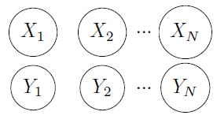

Final Exam
CS 181 Artificial Intelligence (Fall 2020), Final Exam
INSTRUCTIONS:
- Time: 15:20 -- 17:00 (100 minutes)
- This exam is closed-book, but you may bring one A4-size cheat sheet. Put all the study materials and electronic devices (except a calculator) into your bag and put your bag in the front, back, or sides of the classroom.
- You can write your answers in either English or Chinese.
- Two blank pieces of paper are attached, which you can use as scratch paper. Raise your hand if you need more paper.
Multiple choice (10 pt)
Each question has one or more correct answer(s). Select all the correct answer(s). For each question, you get 0 point if you select one or more wrong answers, but you get 0.5 point if you select a non-empty proper subset of the correct answers.
Question 1
?/? point (graded)
Which of the following statements about Markov process and the hidden Markov model (HMM) is/are correct?
Question 2
?/? point (graded)
Which of the following statements about Markov Logic is/are correct?
Question 3
?/? point (graded)
Which of the following statements are true for an MDP?
Question 4
?/? point (graded)
Bob notices value iteration converges more quickly with smaller  and rather than using the true discount
factor , he decides to use a discount factor of
and rather than using the true discount
factor , he decides to use a discount factor of  with
with  when running value iteration.
Mark each of the following that are guaranteed to be true:
when running value iteration.
Mark each of the following that are guaranteed to be true:
Question 5
?/? point (graded)
Let  represent words of a length-
represent words of a length- sentence and
sentence and  represent the words' corresponding labels. Which of the following statements about sequence labeling models is/are correct?
represent the words' corresponding labels. Which of the following statements about sequence labeling models is/are correct?

Question 6
?/? point (graded)
Which of the following statements about overfitting is/are correct?
Question 7
?/? point (graded)
Which of the following statements about supervised learning is/are correct?
Question 8
?/? point (graded)
Which of the following statements about unsupervised learning is/are correct?
Question 9
?/? point (graded)
In general, which of the following is/are necessary or Q-Learning to converge to the optimal Q-values?
Question 10
?/? point (graded)
In which of the following Reinforecement Learning method(s), the policy is not given?
Resources
More questions and the answer of the whole exam can be found here (question sheet) and here (solution).